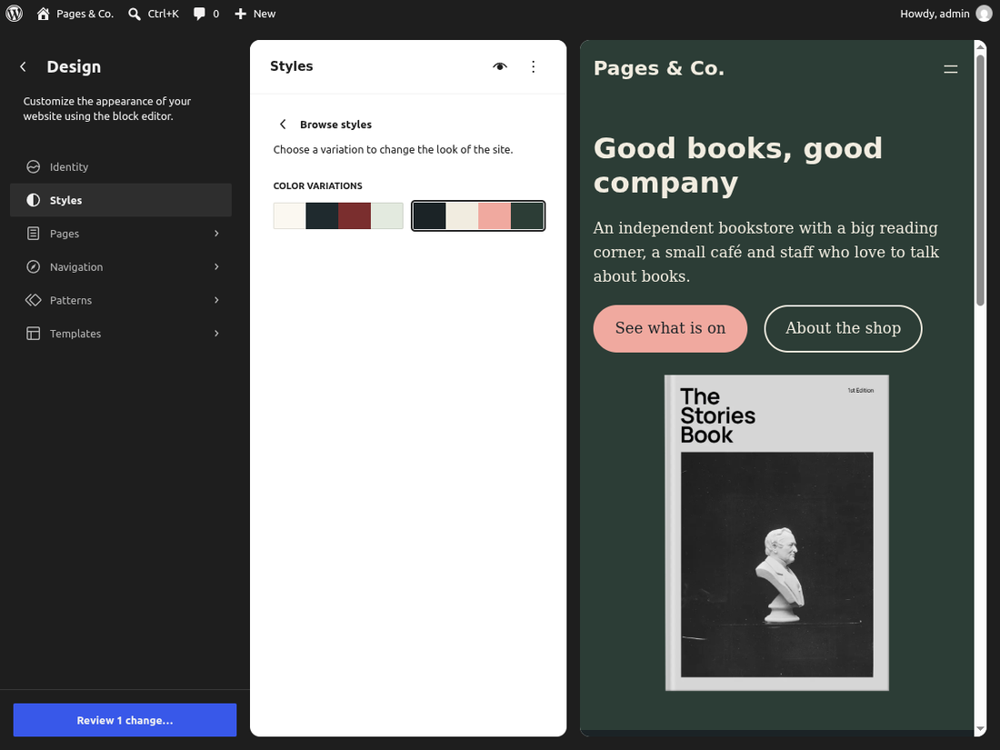
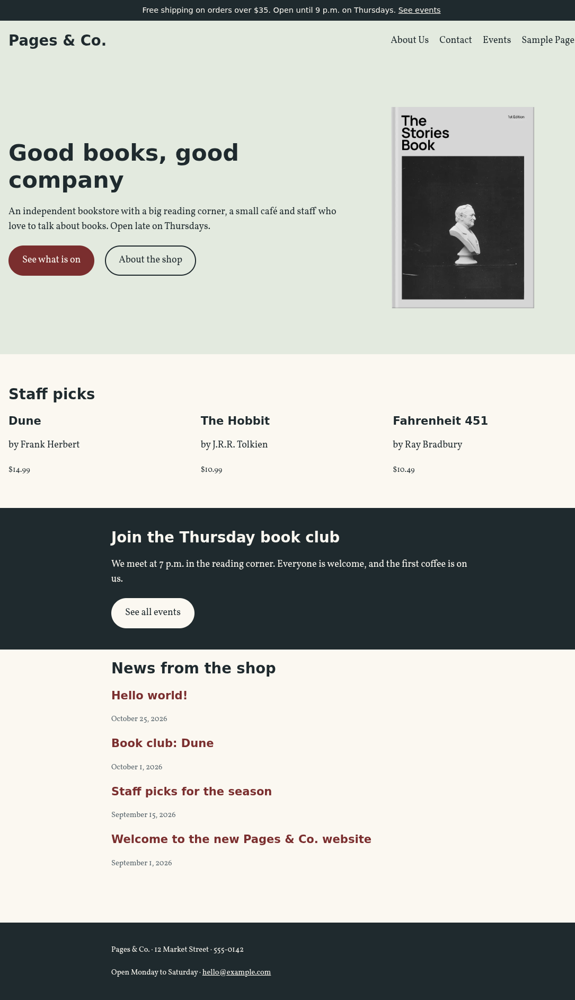

🧩 Lesson 3.3: Patterns, Style Variations & the Site Editor
The pagesco theme from Lesson 3.2 draws every page correctly, but the shop's staff still face an empty canvas whenever they want something nicer than a heading and a paragraph. In this lesson you give them ready-made sections (patterns), color bands they can apply with one click (section styles), a second look for the whole site (a style variation) and the shop's own typeface. You build a real front page out of patterns, and you learn the workflow that keeps the theme's files and the Site Editor's database copies from drifting apart.
🎯 Learning Objectives
By the end of this lesson, you will be able to:
- Write PHP pattern files with the right header fields, translatable text and escaped theme URLs, and place them in templates with the Pattern block
- Explain the difference between theme patterns, synced patterns and template parts, and create a synced pattern that updates every page it is used on
- Define section styles and a style variation as JSON files in
styles/and read what the Site Editor saves when someone chooses one - Bundle a web font with
fontFaceintheme.json, checking that its license allows redistribution - Bring Site Editor changes back into the theme's files with Export and WP-CLI, then reset the database copies
In This Lesson
🧩 Patterns: Sections You Design Once
A pattern is a named, ready-made group of blocks: a welcome banner, a row of featured books, a "join the book club" band. Editors find patterns in the inserter (the + button, then Patterns), click one, and get a finished section they only need to adjust. For a theme developer, patterns are how you hand your design over to people who will never open theme.json.
WordPress has three related tools, and choosing the right one is half the skill:
| Tool | Lives in | After it is inserted | Use it for |
|---|---|---|---|
| Theme pattern | a PHP file in the theme's patterns/ folder | Its blocks are copied in; each copy is edited on its own | Starting points: a hero, a features row, a call to action |
| Synced pattern | a wp_block post in the database (Lesson 2.1's list of post types) | Every use points to the one original; edit it once, every page changes | Content that must stay the same everywhere: opening hours, a disclaimer |
| Template part | a file in parts/ (Lesson 3.2) | Included by slug in templates | Site structure: header, footer |
💡 Mental model: a rubber stamp and a hanging sign
A theme pattern is a rubber stamp. You press it onto the page and get a perfect print; after that the print is just ink on paper, and changing the stamp does not change prints you already made. A synced pattern is a sign hung in several rooms: there is only one sign, so repainting it changes what every room shows. Template parts are the signs fixed to the building itself, at every entrance.
Your first pattern file
The shop wants its front page to open with a welcome: a big heading, a sentence about the shop, two buttons and a picture of a book. Twenty Twenty-Five ships a public-domain book image that fits; copy it into your theme (from the WP-CLI container, as in Lesson 1.2; a file manager works too). Its license is in Twenty Twenty-Five's readme.txt: the photo is CC0 and the book template public domain, so you may redistribute it with your theme.
mkdir -p wp-content/themes/pagesco/assets/images wp-content/themes/pagesco/patterns
cp wp-content/themes/twentytwentyfive/assets/images/book-image.webp wp-content/themes/pagesco/assets/images/
ls wp-content/themes/pagesco/assets/imagesOutput
book-image.webpBefore you write the pattern, count the patterns WordPress has registered for your theme so far (core registers some of its own; you only want the ones whose name starts with pagesco/):
wp eval 'echo count( array_filter( WP_Block_Patterns_Registry::get_instance()->get_all_registered(), fn( $p ) => str_starts_with( $p["name"], "pagesco/" ) ) ), "\n";'Output
0None yet, as expected. A theme pattern is a PHP file in patterns/: a comment header that describes it, then the block markup. Create wordpress/wp-content/themes/pagesco/patterns/hero.php:
<?php
/**
* Title: Hero: welcome to the shop
* Slug: pagesco/hero
* Categories: banner, featured
* Keywords: hero, welcome, intro
* Description: A full-width welcome with the page heading, a short text, two buttons and a book image.
* Viewport Width: 1200
* Post Types: wp_template
* Template Types: front-page
*
* @package pagesco
*/
?>
<!-- wp:group {"align":"full","className":"is-style-section-sage","style":{"spacing":{"padding":{"top":"var:preset|spacing|large","bottom":"var:preset|spacing|large"}}},"layout":{"type":"constrained"}} -->
<div class="wp-block-group alignfull is-style-section-sage" style="padding-top:var(--wp--preset--spacing--large);padding-bottom:var(--wp--preset--spacing--large)">
<!-- wp:columns {"verticalAlignment":"center","align":"wide"} -->
<div class="wp-block-columns alignwide are-vertically-aligned-center">
<!-- wp:column {"verticalAlignment":"center","width":"60%"} -->
<div class="wp-block-column is-vertically-aligned-center" style="flex-basis:60%">
<!-- wp:heading {"level":1} -->
<h1 class="wp-block-heading"><?php esc_html_e( 'Good books, good company', 'pagesco' ); ?></h1>
<!-- /wp:heading -->
<!-- wp:paragraph -->
<p><?php esc_html_e( 'An independent bookstore with a big reading corner, a small café and staff who love to talk about books.', 'pagesco' ); ?></p>
<!-- /wp:paragraph -->
<!-- wp:buttons -->
<div class="wp-block-buttons">
<!-- wp:button -->
<div class="wp-block-button"><a class="wp-block-button__link wp-element-button" href="<?php echo esc_url( home_url( '/events/' ) ); ?>"><?php esc_html_e( 'See what is on', 'pagesco' ); ?></a></div>
<!-- /wp:button -->
<!-- wp:button {"className":"is-style-outline"} -->
<div class="wp-block-button is-style-outline"><a class="wp-block-button__link wp-element-button" href="<?php echo esc_url( home_url( '/about/' ) ); ?>"><?php esc_html_e( 'About the shop', 'pagesco' ); ?></a></div>
<!-- /wp:button -->
</div>
<!-- /wp:buttons -->
</div>
<!-- /wp:column -->
<!-- wp:column {"verticalAlignment":"center","width":"40%"} -->
<div class="wp-block-column is-vertically-aligned-center" style="flex-basis:40%">
<!-- wp:image {"width":"280px","sizeSlug":"full","linkDestination":"none","align":"center"} -->
<figure class="wp-block-image aligncenter size-full is-resized"><img src="<?php echo esc_url( get_theme_file_uri( 'assets/images/book-image.webp' ) ); ?>" alt="<?php esc_attr_e( 'A hardcover book with a black-and-white photo on its cover', 'pagesco' ); ?>" style="width:280px"/></figure>
<!-- /wp:image -->
</div>
<!-- /wp:column -->
</div>
<!-- /wp:columns -->
</div>
<!-- /wp:group -->Three things make this a PHP file rather than plain block markup, and all three are reasons patterns are PHP:
- Translatable text. Every visible string goes through
esc_html_e()oresc_attr_e()with the theme's text domain (Lesson 1.3), so a Spanish site gets Spanish buttons. - URLs that work on every site.
get_theme_file_uri( 'assets/images/book-image.webp' )builds the image URL for whatever domain and folder the theme is installed in, andhome_url( '/events/' )does the same for links. A hard-codedhttp://localhost:8080/…would break the moment the site goes live. - Escaping. The output of those functions is escaped late, with
esc_url(), like any other output (Lesson 1.3).
The className is-style-section-sage on the outer Group is a section style you define later in this lesson; until then it does nothing. The header fields work like the style.css header in Lesson 3.2: WordPress reads them with the same function, get_file_data().
| Header | What it does |
|---|---|
Title, Slug | Required. The slug is namespace/name; use your theme's text domain as the namespace so it cannot clash with another theme's or plugin's |
Categories | Where the inserter lists it. Core's categories include banner, featured, call-to-action, text, about, contact, header and footer; a theme can register its own with register_block_pattern_category() in functions.php (Module 4) |
Keywords, Description | Help the inserter's search and screen readers |
Viewport Width | Width in pixels of the preview thumbnail |
Post Types | Only offer the pattern when editing these post types. wp_template means "only in the Site Editor's templates", which suits a hero with an <h1>: inserted into a page, it would compete with the page title's <h1> |
Template Types | Suggest it when someone creates a template of that type (here front-page) |
Block Types | Offer it as a replacement for a block, for example core/template-part/footer for footer designs (Exercise 2) |
Inserter | no hides it from the inserter; it can still be used in templates by slug |
Why is my pattern missing?
WordPress registers every file in the active theme's patterns/ folder automatically on init; there is nothing to call. Ask the pattern registry whether it knows yours:
wp eval 'var_dump( WP_Block_Patterns_Registry::get_instance()->is_registered( "pagesco/hero" ) );'Output
bool(false)It does not, and nothing on screen tells you why. The reason is a cache. Scanning a folder and reading every file's header on every request is slow, so since WordPress 6.4 the list of a theme's pattern files is stored in a transient (a cached value in the options table; Lesson 7.3 covers transients) for 30 minutes, and rebuilt early only when the theme's Version changes or you switch themes. The count you just ran built that list, while pagesco had no patterns/ folder:
wp transient list --network --search="wp_theme_files*" --fields=name,valueOutput
+----------------------------------------------------------+-------------------------------------------------------+
| name | value |
+----------------------------------------------------------+-------------------------------------------------------+
| wp_theme_files_patterns-ab0ac91d73cd40af5667134910f64f93 | a:2:{s:7:"version";s:5:"1.0.0";s:8:"patterns";a:0:{}} |
+----------------------------------------------------------+-------------------------------------------------------+An empty list of patterns for version 1.0.0. On a live site that cache is exactly what you want. While you are developing a theme, tell WordPress so: the WP_DEVELOPMENT_MODE constant (WordPress 6.3 and later) set to theme switches off the theme caches that get in a developer's way, this one included. WP-CLI adds it to wp-config.php for you:
wp config set WP_DEVELOPMENT_MODE theme
wp eval 'var_dump( wp_get_development_mode(), WP_Block_Patterns_Registry::get_instance()->is_registered( "pagesco/hero" ) );'Output
Success: Added the constant 'WP_DEVELOPMENT_MODE' to the 'wp-config.php' file with the value 'theme'.
string(5) "theme"
bool(true)⚠️ Development mode is for development sites
WP_DEVELOPMENT_MODE belongs in your local wp-config.php only. On a production site it makes every request rescan theme files; leave it out there, and when you deploy a theme with new patterns, raise its Version in style.css so the cache rebuilds (Lesson 8.4). Its other values are core, plugin and all.
🏠 A Front Page Built from Patterns
Your template map from Lesson 3.1 noted "front-page if the shop wants one". It does. front-page.html sits at the top of the hierarchy for the site's front page, above home and index, whether the front page shows the latest posts (as yours does) or a static page. Templates use a pattern with the Pattern block, by slug. Create templates/front-page.html: the hero, then the news list from index.html with smaller headings.
<!-- wp:template-part {"slug":"header","tagName":"header"} /-->
<!-- wp:group {"tagName":"main","style":{"spacing":{"margin":{"top":"0"},"padding":{"bottom":"var:preset|spacing|large"}}},"layout":{"type":"constrained"}} -->
<main class="wp-block-group" style="margin-top:0;padding-bottom:var(--wp--preset--spacing--large)">
<!-- wp:pattern {"slug":"pagesco/hero"} /-->
<!-- wp:heading -->
<h2 class="wp-block-heading">News from the shop</h2>
<!-- /wp:heading -->
<!-- wp:query {"queryId":1,"query":{"inherit":true}} -->
<div class="wp-block-query">
<!-- wp:post-template -->
<!-- wp:post-title {"isLink":true,"level":3} /-->
<!-- wp:post-date /-->
<!-- /wp:post-template -->
</div>
<!-- /wp:query -->
</main>
<!-- /wp:group -->
<!-- wp:template-part {"slug":"footer","tagName":"footer"} /-->The main group has "margin":{"top":"0"} so the hero meets the header without a gap. Because the front page shows the latest posts, the Query Loop's "inherit":true still lists them. Request the page and look at what the Pattern block became:
http://localhost:8080/Output
<h1 class="wp-block-heading">Good books, good company</h1>curl -s http://localhost:8080/ | grep -o 'wp:pattern\|<img [^>]*>\|<a class="wp-block-button__link[^>]*>'Output
<a class="wp-block-button__link wp-element-button" href="http://localhost:8080/events/">
<a class="wp-block-button__link wp-element-button" href="http://localhost:8080/about/">
<img src="http://localhost:8080/wp-content/themes/pagesco/assets/images/book-image.webp" alt="A hardcover book with a black-and-white photo on its cover" style="width:280px"/>The Pattern block left no trace: WordPress included hero.php, ran its PHP and rendered the blocks it printed, so the visitor gets ordinary HTML with full URLs. The wp:pattern comment itself never reaches the browser.
💡 Patterns in templates are expanded when someone edits the template
In a template file, <!-- wp:pattern {"slug":"pagesco/hero"} /--> is a reference: change hero.php and the front page follows. But the moment someone opens the template in the Site Editor, the editor replaces the reference with a copy of the pattern's blocks, and if they save, that copy (with the PHP already run) is what the database stores. You will see exactly that in the last teaching section, and why it matters when you bring edits back into code.
🔁 Synced Patterns
The About page (Lesson 2.1) lists the opening hours, and the shop wants them on the Contact page too. Two copies of a list will disagree the first time the hours change, so this is a job for a synced pattern: one wp_block post, shown wherever it is referenced. (Before WordPress 6.3 these were called "reusable blocks"; the post type kept its old name.)
In the editor you make one from existing blocks: open the About page, select the "Opening hours" heading and the list below it, open the block toolbar's ⋮ menu, choose Create pattern, name it "Opening hours", leave Synced switched on, and click Add. On the Contact page, insert it from the inserter's Patterns tab, under My patterns. Here is what those clicks store, done with WP-CLI so you can see each piece. First the pattern itself: a post whose content is the two blocks.
<!-- wp:heading -->
<h2 class="wp-block-heading">Opening hours</h2>
<!-- /wp:heading -->
<!-- wp:list -->
<ul class="wp-block-list"><!-- wp:list-item -->
<li>Monday to Wednesday, Friday: 9 a.m. to 6 p.m.</li>
<!-- /wp:list-item -->
<!-- wp:list-item -->
<li>Thursday: 9 a.m. to 9 p.m.</li>
<!-- /wp:list-item -->
<!-- wp:list-item -->
<li>Saturday: 10 a.m. to 5 p.m.</li>
<!-- /wp:list-item --></ul>
<!-- /wp:list -->wp post create pagesco-content/opening-hours.html --post_type=wp_block --post_title="Opening hours" --post_status=publish --porcelainOutput (your ID will differ)
20--porcelain prints only the new ID. Everywhere the pattern appears, the page stores a self-closing Pattern reference, <!-- wp:block {"ref":ID} /-->, instead of the blocks. Here are the new About page (the heading and list replaced by the reference, as Create pattern does) and the Contact page with the reference added; use your own ID in both files:
<!-- wp:paragraph -->
<p>Pages & Co. is an independent bookstore with a big reading corner, a small café and staff who love to talk about books.</p>
<!-- /wp:paragraph -->
<!-- wp:block {"ref":20} /-->
<!-- wp:paragraph -->
<p>Questions about an order? See our Contact page.</p>
<!-- /wp:paragraph --><!-- wp:paragraph -->
<p>Visit us at 12 Market Street, call 555-0142, or write to <a href="mailto:hello@example.com">hello@example.com</a>.</p>
<!-- /wp:paragraph -->
<!-- wp:block {"ref":20} /-->wp post update 12 pagesco-content/about.html
wp post update 13 pagesco-content/contact.html
curl -s http://localhost:8080/contact/ | grep -o '<h2 class="wp-block-heading">[^<]*\|<li>[^<]*'Output
Success: Updated post 12.
Success: Updated post 13.
<h2 class="wp-block-heading">Opening hours
<li>Monday to Wednesday, Friday: 9 a.m. to 6 p.m.
<li>Thursday: 9 a.m. to 9 p.m.
<li>Saturday: 10 a.m. to 5 p.m.Now the test that matters. The shop starts closing at 6 p.m. on Saturdays. Change the pattern once, in Appearance > Editor > Patterns (or, as here, in the file and with one command), and check both pages:
sed -i 's/Saturday: 10 a.m. to 5 p.m./Saturday: 10 a.m. to 6 p.m./' pagesco-content/opening-hours.html
wp post update 20 pagesco-content/opening-hours.html
curl -s http://localhost:8080/about/ | grep -o 'Saturday: [^<]*'
curl -s http://localhost:8080/contact/ | grep -o 'Saturday: [^<]*'Output
Success: Updated post 20.
Saturday: 10 a.m. to 6 p.m.
Saturday: 10 a.m. to 6 p.m.One edit, two pages. Keep the pagesco-content folder for now (you delete it after Common Mistakes), and see what WordPress stores for a synced pattern compared with an unsynced one. When you switch Synced off in the Create pattern dialog, WordPress still saves a wp_block post, but marks it with the meta key wp_pattern_sync_status = unsynced; inserting it then copies the blocks, like a theme pattern. Your pattern has no such meta, which means synced:
wp post meta list 20 --format=countOutput
0✅ Synced patterns are content, not theme
A synced pattern lives in the database and is referenced by its post ID, which is different on every site. That is why themes do not ship synced patterns, and why you should never write wp:block {"ref":…} into a template file: on another site the ID points at nothing or at something else. Theme files use theme patterns (by slug) and template parts; synced patterns belong to the people who run the site.
🎨 Section Styles and Style Variations
Lesson 3.2 put all of the design system in one theme.json. Two kinds of extra JSON files in the theme's styles/ folder build on it. Both use the same format as theme.json, and WordPress tells them apart by one key:
- A file with
"blockTypes"is a section style (a block style variation, WordPress 6.6 and later): a named look that editors apply to one Group or Columns block, changing the colors of everything inside it. - A file without
"blockTypes"is a style variation: an alternativetheme.jsonfor the whole site that the site owner can switch to in the Styles panel.
A section style: the sage band
Create styles/sections/section-sage.json (the subfolder is only for order; WordPress reads every JSON file under styles/):
{
"$schema": "https://schemas.wp.org/wp/7.1/theme.json",
"version": 3,
"slug": "section-sage",
"title": "Sage band",
"blockTypes": [ "core/group", "core/columns" ],
"styles": {
"color": {
"background": "var:preset|color|sage",
"text": "var:preset|color|ink"
},
"elements": {
"link": { "color": { "text": "var:preset|color|ink" } }
}
}
}slug becomes the class is-style-section-sage; title is what editors see under the block's Styles in the sidebar; blockTypes lists the blocks it can be applied to; styles is a small theme.json styles section that applies only inside the block. Your hero already carries the class, so reload the front page and look for the CSS WordPress generated:
curl -s http://localhost:8080/ | grep -o 'class="wp-block-group alignfull is-style-section-sage[^"]*"\|:root :where(.wp-block-group.is-style-section-sage--[0-9]*){[^}]*}'Output
:root :where(.wp-block-group.is-style-section-sage--2){background-color: var(--wp--preset--color--sage);color: var(--wp--preset--color--ink);}
class="wp-block-group alignfull is-style-section-sage has-global-padding is-layout-constrained wp-block-group-is-layout-constrained is-style-section-sage--2"WordPress gave this one Group an extra, numbered class (is-style-section-sage-- plus a number that is unique on the page) and printed a rule only for it. The rule uses :where(), so it has the same low specificity as the theme's other styles (Lesson 3.2), and it points at the sage preset, not a hex value. The second section style, an ink-colored band, comes in the project.
A style variation: Evening
The shop wants a darker look for winter evenings. Because every template and part refers to presets, a variation that redefines the five colors is enough to recolor the whole site. Create styles/evening.json:
{
"$schema": "https://schemas.wp.org/wp/7.1/theme.json",
"version": 3,
"title": "Evening",
"settings": {
"color": {
"palette": [
{ "slug": "paper", "name": "Paper", "color": "#1b2326" },
{ "slug": "ink", "name": "Ink", "color": "#f1ece0" },
{ "slug": "oxblood", "name": "Oxblood", "color": "#f0a99f" },
{ "slug": "sage", "name": "Sage", "color": "#2c3d36" },
{ "slug": "slate", "name": "Slate", "color": "#b4bec2" }
]
}
}
}The slugs stay the same and keep their jobs ("paper" is still the page, "ink" the text); only the hex values change. The pale ink on dark paper is about 13.5:1, the light oxblood links about 8.3:1, so the contrast rules from Lesson 3.2 still hold.
💡 Name colors by their job
Twenty Twenty-Five names its colors base, contrast and accent-1 to accent-6 rather than "white" or "blue" for exactly this reason: in a dark variation, "white" would be a lie. The pagesco names are describing hues, but each one has a single job, so the Evening variation can redefine "paper" as dark without confusing anyone who reads the templates. For a theme you publish, role names are the safer choice.
Ask WordPress which variations the theme now offers, of each kind:
wp eval 'foreach ( WP_Theme_JSON_Resolver::get_style_variations() as $v ) { echo "site: ", $v["title"], "\n"; } foreach ( WP_Theme_JSON_Resolver::get_style_variations( "block" ) as $v ) { echo "section: ", $v["title"], " (", implode( ", ", $v["blockTypes"] ), ")\n"; }'Output
site: Evening
section: Sage band (core/group, core/columns)Now open Appearance > Editor > Styles > Browse styles. Because Evening only changes colors, the Site Editor lists it under Color Variations, next to Default (variations that change only typography are listed the same way; Twenty Twenty-Five keeps such partial files in styles/colors/ and styles/typography/). Click Evening and the preview recolors:

Clicking Save there does not touch your files. It writes the chosen settings into the site's user global styles: one wp_global_styles post per theme (Lesson 3.1), the top layer of the three that WordPress merges (core, theme, user). The Site Editor saves it through the REST API. The script below sends the same request with the variation's palette, so you can see the result without clicking; save it as wordpress/pagesco-choose-evening.php and run it as admin (as a REST request it needs a user who may edit theme options):
<?php
// The request the Site Editor sends when you choose Evening and click Save.
$variation = wp_json_file_decode( get_theme_file_path( 'styles/evening.json' ), array( 'associative' => true ) );
$id = WP_Theme_JSON_Resolver::get_user_global_styles_post_id();
$request = new WP_REST_Request( 'POST', '/wp/v2/global-styles/' . $id );
$request->set_param( 'settings', array( 'color' => array( 'palette' => array( 'theme' => $variation['settings']['color']['palette'] ) ) ) );
$response = rest_do_request( $request );
echo $response->get_status(), ' ', get_post_field( 'post_content', $id ), "\n";Output
200 {"settings":{"color":{"palette":{"theme":[{"slug":"paper","name":"Paper","color":"#1b2326"},{"slug":"ink","name":"Ink","color":"#f1ece0"},{"slug":"oxblood","name":"Oxblood","color":"#f0a99f"},{"slug":"sage","name":"Sage","color":"#2c3d36"},{"slug":"slate","name":"Slate","color":"#b4bec2"}]}}},"isGlobalStylesUserThemeJSON":true,"version":3}curl -s http://localhost:8080/ | grep -o -- '--wp--preset--color--paper: #[0-9a-f]*'
wp post list --post_type=wp_global_styles --fields=ID,post_nameOutput (your ID will differ)
--wp--preset--color--paper: #1b2326
+----+--------------------------+
| ID | post_name |
+----+--------------------------+
| 24 | wp-global-styles-pagesco |
+----+--------------------------+The page is now dark, and the choice lives in the database as post wp-global-styles-pagesco, not in your theme. That is the same situation as the template copy in Lesson 3.2's Common Mistakes, and it is fine as long as you know it. The shop decides to keep the light design for now, so reset it: in the Site Editor, Styles, the ⋮ menu, Reset styles; or delete the post with WP-CLI (the Site Editor creates a new, empty one the next time you open Styles). Then delete the script.
wp post delete $(wp post list --post_type=wp_global_styles --field=ID) --force
rm pagesco-choose-evening.php
curl -s http://localhost:8080/ | grep -o -- '--wp--preset--color--paper: #[0-9a-f]*'Output (your ID will differ)
Success: Deleted post 24.
--wp--preset--color--paper: #fbf8f1🔤 Web Fonts with fontFace
In Lesson 3.2 you used system font stacks, which cost nothing to load. The shop now wants a bookish serif that looks the same on every device, so the theme will bundle a font: ship the font files inside the theme and describe them with fontFace in theme.json. WordPress then prints the @font-face rules itself, and visitors download the font from your site, not from a third-party server (better for privacy and for speed).
🛑 Check the license before you ship a font
A font is software with a license, and a theme that bundles it redistributes it. Fonts under the SIL Open Font License (OFL) 1.1 may be bundled with and redistributed in other software, including commercial themes, as long as the copyright notice and license travel with them and you do not sell the font on its own; the license text is usually stored inside the font file's metadata too. Most fonts on Google Fonts are OFL. A font you bought for print, or one from a font subscription, usually may not be redistributed in a theme. If you cannot confirm the license, keep a system stack.
The course uses Vollkorn, a serif designed for long reading. It is OFL 1.1, and you already have it: Twenty Twenty-Five bundles it, and its readme.txt records the license ("Copyright (c) 2005–2018, Friedrich Althausen", OFL 1.1). Copy the two variable font files (upright and italic, each covering weights 400 to 900):
mkdir -p wp-content/themes/pagesco/assets/fonts/vollkorn
cp wp-content/themes/twentytwentyfive/assets/fonts/vollkorn/*.woff2 wp-content/themes/pagesco/assets/fonts/vollkorn/
ls wp-content/themes/pagesco/assets/fonts/vollkornOutput
Vollkorn-Italic-VariableFont_wght.woff2 Vollkorn-VariableFont_wght.woff2Then give the theme a readme.txt that credits what it bundles, in the format the WordPress.org theme directory uses (Lesson 8.3 covers readme.txt in full). Create wordpress/wp-content/themes/pagesco/readme.txt:
=== Pages & Co. ===
Requires at least: 6.6
Tested up to: 7.1
Requires PHP: 7.4
License: GPLv2 or later
License URI: http://www.gnu.org/licenses/gpl-2.0.html
The block theme of the Pages & Co. independent bookstore.
== Copyright ==
Pages & Co. WordPress Theme, (C) Pages & Co.
Pages & Co. is distributed under the terms of the GNU GPL.
This theme bundles the following third-party resources:
Vollkorn Font
Copyright (c) 2005-2018, Friedrich Althausen
License: SIL Open Font License, 1.1, https://opensource.org/licenses/OFL-1.1
Source: https://fonts.google.com/specimen/Vollkorn
Image: assets/images/book-image.webp (from Twenty Twenty-Five)
Book template by Beatriz Fialho, public domain; photo "Bust" by Mathew Brady, public domain (CC0)
License: CC0, https://creativecommons.org/publicdomain/zero/1.0/
Source: https://www.rawpixel.com/image/8799536Now the theme.json change. Only the serif entry in settings.typography.fontFamilies changes: Vollkorn goes first in its stack (the old stack stays as the fallback while the font loads), and a fontFace array describes the two files. file:./ means "relative to the theme folder".
{
"slug": "serif",
"name": "Serif",
"fontFamily": "Vollkorn, Charter, 'Bitstream Charter', 'Sitka Text', Cambria, serif",
"fontFace": [
{
"fontFamily": "Vollkorn",
"fontStyle": "normal",
"fontWeight": "400 900",
"src": [ "file:./assets/fonts/vollkorn/Vollkorn-VariableFont_wght.woff2" ]
},
{
"fontFamily": "Vollkorn",
"fontStyle": "italic",
"fontWeight": "400 900",
"src": [ "file:./assets/fonts/vollkorn/Vollkorn-Italic-VariableFont_wght.woff2" ]
}
]
},The complete theme.json with the change (copy this if you prefer to replace the whole file)
{
"$schema": "https://schemas.wp.org/wp/7.1/theme.json",
"version": 3,
"settings": {
"appearanceTools": true,
"color": {
"defaultPalette": false,
"defaultGradients": false,
"defaultDuotone": false,
"palette": [
{ "slug": "paper", "name": "Paper", "color": "#fbf8f1" },
{ "slug": "ink", "name": "Ink", "color": "#1f2a2e" },
{ "slug": "oxblood", "name": "Oxblood", "color": "#7a2e2e" },
{ "slug": "sage", "name": "Sage", "color": "#e3eadf" },
{ "slug": "slate", "name": "Slate", "color": "#56636a" }
]
},
"layout": {
"contentSize": "680px",
"wideSize": "1180px"
},
"spacing": {
"defaultSpacingSizes": false,
"spacingSizes": [
{ "slug": "small", "name": "Small", "size": "1rem" },
{ "slug": "medium", "name": "Medium", "size": "clamp(1.5rem, 4vw, 2.5rem)" },
{ "slug": "large", "name": "Large", "size": "clamp(2.5rem, 8vw, 5rem)" }
]
},
"typography": {
"defaultFontSizes": false,
"fluid": true,
"fontFamilies": [
{
"slug": "serif",
"name": "Serif",
"fontFamily": "Vollkorn, Charter, 'Bitstream Charter', 'Sitka Text', Cambria, serif",
"fontFace": [
{
"fontFamily": "Vollkorn",
"fontStyle": "normal",
"fontWeight": "400 900",
"src": [ "file:./assets/fonts/vollkorn/Vollkorn-VariableFont_wght.woff2" ]
},
{
"fontFamily": "Vollkorn",
"fontStyle": "italic",
"fontWeight": "400 900",
"src": [ "file:./assets/fonts/vollkorn/Vollkorn-Italic-VariableFont_wght.woff2" ]
}
]
},
{ "slug": "sans", "name": "Sans", "fontFamily": "system-ui, -apple-system, 'Segoe UI', Roboto, sans-serif" }
],
"fontSizes": [
{ "slug": "small", "name": "Small", "size": "0.9rem", "fluid": false },
{ "slug": "medium", "name": "Medium", "size": "1.125rem", "fluid": false },
{ "slug": "large", "name": "Large", "size": "1.75rem", "fluid": { "min": "1.4rem", "max": "1.75rem" } },
{ "slug": "x-large", "name": "Extra Large", "size": "2.75rem", "fluid": { "min": "2rem", "max": "2.75rem" } }
]
},
"useRootPaddingAwareAlignments": true
},
"styles": {
"color": {
"background": "var:preset|color|paper",
"text": "var:preset|color|ink"
},
"spacing": {
"blockGap": "1.25rem",
"padding": {
"left": "var:preset|spacing|small",
"right": "var:preset|spacing|small"
}
},
"typography": {
"fontFamily": "var:preset|font-family|serif",
"fontSize": "var:preset|font-size|medium",
"lineHeight": "1.6"
},
"elements": {
"link": {
"color": { "text": "var:preset|color|oxblood" },
":hover": { "typography": { "textDecoration": "none" } }
},
"heading": {
"typography": {
"fontFamily": "var:preset|font-family|sans",
"fontWeight": "700",
"lineHeight": "1.2"
}
},
"h1": { "typography": { "fontSize": "var:preset|font-size|x-large" } },
"h2": { "typography": { "fontSize": "var:preset|font-size|large" } },
"button": {
"color": {
"background": "var:preset|color|oxblood",
"text": "var:preset|color|paper"
}
}
},
"blocks": {
"core/site-title": {
"typography": {
"fontFamily": "var:preset|font-family|sans",
"fontSize": "var:preset|font-size|large",
"fontWeight": "700"
},
"elements": {
"link": { "color": { "text": "var:preset|color|ink" } }
}
},
"core/post-date": {
"color": { "text": "var:preset|color|slate" },
"typography": { "fontSize": "var:preset|font-size|small" }
}
},
"css": ".pagesco-notice { background: var(--wp--preset--color--ink); color: var(--wp--preset--color--paper); font-family: var(--wp--preset--font-family--sans); font-size: var(--wp--preset--font-size--small); padding: 0.5rem 1rem; text-align: center; } .pagesco-notice a { color: inherit; }"
},
"templateParts": [
{ "name": "header", "title": "Header", "area": "header" },
{ "name": "footer", "title": "Footer", "area": "footer" }
]
}The slug is still serif, so every style that uses var:preset|font-family|serif switches to Vollkorn without another change: the style guide at work again. Look at what WordPress prints in the page's <head>, and check that the font URL really answers:
curl -s http://localhost:8080/ | grep -A 3 'wp-fonts-local'
curl -s -o /dev/null -w '%{http_code} %{content_type}\n' http://localhost:8080/wp-content/themes/pagesco/assets/fonts/vollkorn/Vollkorn-VariableFont_wght.woff2Output
<style class="wp-fonts-local">
@font-face{font-family:Vollkorn;font-style:normal;font-weight:400 900;font-display:fallback;src:url('http://localhost:8080/wp-content/themes/pagesco/assets/fonts/vollkorn/Vollkorn-VariableFont_wght.woff2') format('woff2');}
@font-face{font-family:Vollkorn;font-style:italic;font-weight:400 900;font-display:fallback;src:url('http://localhost:8080/wp-content/themes/pagesco/assets/fonts/vollkorn/Vollkorn-Italic-VariableFont_wght.woff2') format('woff2');}
</style>
200 font/woff2One @font-face rule per entry, with the full URL resolved from file:./, and font-display:fallback added by WordPress (the browser shows the fallback font briefly instead of invisible text). Appearance > Fonts now lists, under Theme, the font families by their preset names: Sans (1 of 1 active) and Serif (2 of 2 active, the two Vollkorn files). Fonts that a site owner installs there instead are stored in wp-content/fonts/ and as wp_font_family posts: site content again, not part of your theme.
📤 From the Site Editor Back to Code
Here is the situation every block-theme developer meets. The shop manager opens the front page in the Site Editor, adds "Open late on Thursdays." to the hero text, and clicks Save. As the tip in the front-page section warned, the editor expanded the patterns before saving. This script sends the same request the Site Editor does (save it as wordpress/pagesco-manager-edit.php and run it as admin), so you can follow along without clicking; in your own browser you can make the edit by hand instead.
<?php
// What the Site Editor saves: the template with every Pattern block expanded, plus the manager's edit.
$template = get_block_template( 'pagesco//front-page' );
$blocks = resolve_pattern_blocks( parse_blocks( $template->content ) );
$content = str_replace( 'talk about books.', 'talk about books. Open late on Thursdays.', serialize_blocks( $blocks ) );
$request = new WP_REST_Request( 'POST', '/wp/v2/templates/pagesco//front-page' );
$request->set_param( 'content', $content );
$response = rest_do_request( $request );
echo $response->get_status(), ' ', $response->get_data()['source'], "\n";Output
200 customThe template's source is now custom: a database copy that wins over templates/front-page.html (Lesson 3.2). Look inside it:
wp post list --post_type=wp_template --fields=ID,post_name
wp post get $(wp post list --post_type=wp_template --field=ID) --field=post_content | grep -o 'wp:pattern\|"patternName":"[a-z/-]*"\|src="[^"]*"\|Open late on Thursdays.'Output (your ID will differ)
+----+------------+
| ID | post_name |
+----+------------+
| 26 | front-page |
+----+------------+
"patternName":"pagesco/hero"
Open late on Thursdays.
src="http://localhost:8080/wp-content/themes/pagesco/assets/images/book-image.webp"Read that carefully. No wp:pattern reference is left: the hero's blocks are copied in, with a patternName note in their metadata recording where they came from. The image URL is now hard-coded to http://localhost:8080, and the translatable strings are frozen in English, because the PHP ran before the save. If you simply copied this template over your file, you would lose all three benefits of the pattern file.
Two ways to get the changes out
Export downloads the whole theme with the database changes merged in. In the Site Editor, open a template, click the ⋮ Options menu in the top bar and choose Export ("Download your theme with updated templates and styles."). You get pagesco.zip; unzip it somewhere outside wordpress/ and compare it with your theme folder before copying anything. The Export button calls the core function wp_generate_block_templates_export_file(), so you can produce the same zip from the WP-CLI container and inspect it:
zip=$(wp eval 'echo wp_generate_block_templates_export_file();')
rm -rf /tmp/pagesco-export && mkdir /tmp/pagesco-export && unzip -q "$zip" -d /tmp/pagesco-export && rm "$zip"
cd /tmp/pagesco-export
find . -type f | sort
grep -c 'wp:pattern' templates/front-page.html
head -n 5 theme.jsonOutput
./assets/fonts/vollkorn/Vollkorn-Italic-VariableFont_wght.woff2
./assets/fonts/vollkorn/Vollkorn-VariableFont_wght.woff2
./assets/images/book-image.webp
./parts/footer.html
./parts/header.html
./patterns/hero.php
./readme.txt
./style.css
./styles/evening.json
./styles/sections/section-sage.json
./templates/404.html
./templates/archive.html
./templates/front-page.html
./templates/index.html
./templates/page.html
./templates/search.html
./templates/single.html
./theme.json
0
{
"$schema": "https://schemas.wp.org/wp/7.1/theme.json",
"settings": {
"appearanceTools": true,
"color": {Every file of the theme is there, and every template too, whether it came from a file or the database. Two warnings in that output: templates/front-page.html has no Pattern references left (0), and theme.json was regenerated from WordPress's merged data, with keys reordered and every entry expanded over several lines. Export is a great way to see everything the Site Editor changed; it is not a file to paste over your work. The official free Create Block Theme plugin goes further ("Save Changes to Theme" writes edits straight into the theme folder) and is worth knowing; it has the same pattern-expansion caveat.
WP-CLI is the precise way for one template: read the copy, move the change to where it belongs, then remove the copy. Here the change belongs in the hero pattern, not in the template:
sed -i "s/talk about books.', 'pagesco'/talk about books. Open late on Thursdays.', 'pagesco'/" wp-content/themes/pagesco/patterns/hero.php
grep -o 'talk about books[^,]*' wp-content/themes/pagesco/patterns/hero.php
wp post delete $(wp post list --post_type=wp_template --field=ID) --force
rm -rf /tmp/pagesco-export pagesco-manager-edit.php
curl -s http://localhost:8080/ | grep -o 'talk about books[^<]*'Output (your ID will differ)
talk about books. Open late on Thursdays.'
Success: Deleted post 26.
talk about books. Open late on Thursdays.The front page is drawn from your file again, the manager's sentence is in the pattern where it is translatable, and the image URL is built by PHP again. In the Site Editor the same reset is Templates, the template's ⋮ menu, Reset. Make this loop a habit: whenever wp post list --post_type=wp_template,wp_template_part,wp_global_styles shows something, decide for each item whether it moves into code or stays as the owner's customization.
⚠️ Common Mistakes
All three of these fail quietly for visitors. Make each one on purpose, then fix it.
1. A pattern file without a Slug
You start a "Visit us" pattern and forget the Slug line:
<?php
/**
* Title: Visit us
* Categories: contact
*
* @package pagesco
*/
?>
<!-- wp:paragraph -->
<p><?php esc_html_e( 'Visit us at 12 Market Street.', 'pagesco' ); ?></p>
<!-- /wp:paragraph -->http://localhost:8080/about/ (the visible text)Output
Free shipping on orders over $35. Open until 9 p.m. on Thursdays. See events
Skip to content
Pages & Co.
About Us
Contact
Events
Sample Page
About Us
Pages & Co. is an independent bookstore with a big reading corner, a small café and staff who love to talk about books.
Opening hours
Monday to Wednesday, Friday: 9 a.m. to 6 p.m.
Thursday: 9 a.m. to 9 p.m.
Saturday: 10 a.m. to 6 p.m.
Questions about an order? See our Contact page.
Pages & Co. · 12 Market Street · 555-0142
Open Monday to Saturday · hello@example.com
Notice: Function get_block_patterns was called incorrectly. Could not register file "/var/www/html/wp-content/themes/pagesco/patterns/visit-us.php" as a block pattern ("Slug" field missing) Please see Debugging in WordPress for more information. (This message was added in version 6.0.0.) in /var/www/html/wp-includes/functions.php on line 6260What it means: WordPress skipped the file: "Could not register file … as a block pattern ("Slug" field missing)". It is a _doing_it_wrong() notice (the function name in it is the one that read the file), so it appears only with WP_DEBUG on, at the top of every page and in debug.log. Without development mode you might not see it at all: the file list is cached, so the notice appears once and the pattern is simply missing from then on. Fix: add Slug: pagesco/visit-us. A slug may only contain letters, digits, /, _ and -. You do not need this pattern, so delete it:
rm wp-content/themes/pagesco/patterns/visit-us.php2. A font path with a typo
Font folders have long names, and one missing letter is easy. Simulate it by renaming the folder:
mv wp-content/themes/pagesco/assets/fonts/vollkorn wp-content/themes/pagesco/assets/fonts/volkorn
curl -s http://localhost:8080/ | grep -c 'Vollkorn-VariableFont_wght.woff2'
curl -s -o /dev/null -w '%{http_code}\n' http://localhost:8080/wp-content/themes/pagesco/assets/fonts/vollkorn/Vollkorn-VariableFont_wght.woff2Output
1
404What it means: WordPress builds the @font-face URL from theme.json without checking that the file exists, so the page still announces the font, and the browser's request for it gets a 404. Visitors silently see the fallback serif. No PHP message, nothing in debug.log. Fix: open the browser's developer tools, Network tab, filter by "Font": a red 404 there points straight at the wrong path. Put the folder name back:
mv wp-content/themes/pagesco/assets/fonts/volkorn wp-content/themes/pagesco/assets/fonts/vollkorn
curl -s -o /dev/null -w '%{http_code}\n' http://localhost:8080/wp-content/themes/pagesco/assets/fonts/vollkorn/Vollkorn-VariableFont_wght.woff2Output
2003. Deleting a synced pattern that pages still use
Tidying up Appearance > Editor > Patterns, someone opens the "Opening hours" card's actions menu, chooses Delete and confirms. That deletes the wp_block post permanently (it does not go to the trash), exactly like this command:
wp post delete 20 --force
curl -s http://localhost:8080/about/ | grep -c 'Thursday: 9 a.m.'
curl -s http://localhost:8080/contact/ | grep -c 'Thursday: 9 a.m.'Output (your ID will differ)
Success: Deleted post 20.
0
0What it means: both pages still contain <!-- wp:block {"ref":20} /-->, and the block renders a published wp_block or nothing at all. So the hours vanished from every page that used them, with no message for visitors and nothing in debug.log. (grep -c found nothing and exited with status 1.) Creating a new "Opening hours" pattern does not help: it gets a new ID, and the pages point at the old one. Fix: recreate the pattern with its old ID from a copy. The Patterns screen's Export as JSON action and your database backups (Lesson 8.4) are such copies; here you have the block markup in pagesco-content/. wp post create passes --import_id to wp_insert_post(), which uses that ID if it is free:
wp post create pagesco-content/opening-hours.html --post_type=wp_block --post_title="Opening hours" --post_status=publish --import_id=20 --porcelain
curl -s http://localhost:8080/contact/ | grep -c 'Thursday: 9 a.m.'
rm -r pagesco-contentOutput (your ID will differ)
20
1Better still, prevent it: before deleting a synced pattern, find the pages that use it (Exercise 3 shows how), and on each one either remove it or choose Detach in the block toolbar, which turns the reference back into ordinary blocks.
🛠️ Project: The Pages & Co. Front Page
You have a hero pattern, one section style, the Evening variation, the web font and the synced opening hours. Now finish the front page: a featured-books row, an ink-colored call to action with its own section style, the final template, a theme screenshot, and a check of the whole site. Allow about 45 minutes.
🛠️ Step 1: The featured-books pattern (12 min)
The shop wants three staff picks on the front page. The books are not WordPress content yet (the Book post type arrives in Lesson 5.2, and Module 6 builds blocks that show real book data), so this pattern holds them in a PHP array and loops over it. That is another reason patterns are PHP: you can generate repetitive markup instead of copying it. Create patterns/featured-books.php:
<?php
/**
* Title: Featured books: staff picks
* Slug: pagesco/featured-books
* Categories: featured
* Keywords: books, staff picks, featured
* Description: Three featured books in a row, with title, author and price.
* Viewport Width: 1200
*
* @package pagesco
*/
$pagesco_picks = array(
array(
'title' => 'Dune',
'author' => 'Frank Herbert',
'price' => 14.99,
),
array(
'title' => 'The Hobbit',
'author' => 'J.R.R. Tolkien',
'price' => 10.99,
),
array(
'title' => 'Fahrenheit 451',
'author' => 'Ray Bradbury',
'price' => 10.49,
),
);
?>
<!-- wp:group {"align":"wide","style":{"spacing":{"padding":{"top":"var:preset|spacing|medium","bottom":"var:preset|spacing|medium"}}}} -->
<div class="wp-block-group alignwide" style="padding-top:var(--wp--preset--spacing--medium);padding-bottom:var(--wp--preset--spacing--medium)">
<!-- wp:heading -->
<h2 class="wp-block-heading"><?php esc_html_e( 'Staff picks', 'pagesco' ); ?></h2>
<!-- /wp:heading -->
<!-- wp:columns -->
<div class="wp-block-columns">
<?php foreach ( $pagesco_picks as $pagesco_book ) : ?>
<!-- wp:column -->
<div class="wp-block-column">
<!-- wp:heading {"level":3} -->
<h3 class="wp-block-heading"><?php echo esc_html( $pagesco_book['title'] ); ?></h3>
<!-- /wp:heading -->
<!-- wp:paragraph -->
<p><?php /* translators: %s: author name. */ printf( esc_html__( 'by %s', 'pagesco' ), esc_html( $pagesco_book['author'] ) ); ?></p>
<!-- /wp:paragraph -->
<!-- wp:paragraph {"fontSize":"small"} -->
<p class="has-small-font-size"><?php echo esc_html( '$' . number_format_i18n( $pagesco_book['price'], 2 ) ); ?></p>
<!-- /wp:paragraph -->
</div>
<!-- /wp:column -->
<?php endforeach; ?>
</div>
<!-- /wp:columns -->
</div>
<!-- /wp:group -->Variables in a pattern file run inside a WordPress function, but give them your prefix anyway ($pagesco_picks): coding-standard checks cannot tell they are local, and a prefix never hurts. The price is formatted with number_format_i18n() so a French site would print 14,99, and the /* translators: */ comment explains the %s to translators (Lesson 1.3). Check that WordPress registered it and runs the loop:
wp eval '$p = WP_Block_Patterns_Registry::get_instance()->get_registered( "pagesco/featured-books" ); echo $p["title"], " | ", implode( ", ", $p["categories"] ), "\n";'
wp eval 'echo WP_Block_Patterns_Registry::get_instance()->get_registered( "pagesco/featured-books" )["content"];' | grep -o '<h3[^>]*>[^<]*\|<p>by [^<]*\|\$[0-9.]*'Output
Featured books: staff picks | featured
<h3 class="wp-block-heading">Dune
<p>by Frank Herbert
$14.99
<h3 class="wp-block-heading">The Hobbit
<p>by J.R.R. Tolkien
$10.99
<h3 class="wp-block-heading">Fahrenheit 451
<p>by Ray Bradbury
$10.49🛠️ Step 2: The ink band and the call to action (10 min)
A second section style, the reverse of the page: ink background, paper text, and paper buttons with ink text so the button stays visible on the dark band. Create styles/sections/section-ink.json:
{
"$schema": "https://schemas.wp.org/wp/7.1/theme.json",
"version": 3,
"slug": "section-ink",
"title": "Ink band",
"blockTypes": [ "core/group", "core/columns" ],
"styles": {
"color": {
"background": "var:preset|color|ink",
"text": "var:preset|color|paper"
},
"elements": {
"heading": { "color": { "text": "var:preset|color|paper" } },
"link": { "color": { "text": "var:preset|color|paper" } },
"button": {
"color": {
"background": "var:preset|color|paper",
"text": "var:preset|color|ink"
}
}
}
}
}Section styles can set elements (links, headings, buttons) just like theme.json; here headings need their own color, because styles.elements.heading in theme.json would otherwise not reach them. Then the call to action that uses it, patterns/call-to-action.php:
<?php
/**
* Title: Call to action: book club
* Slug: pagesco/call-to-action
* Categories: call-to-action
* Keywords: book club, events, join
* Description: An ink-colored band inviting readers to the Thursday book club.
* Viewport Width: 1200
*
* @package pagesco
*/
?>
<!-- wp:group {"align":"full","className":"is-style-section-ink","style":{"spacing":{"padding":{"top":"var:preset|spacing|medium","bottom":"var:preset|spacing|medium"}}},"layout":{"type":"constrained"}} -->
<div class="wp-block-group alignfull is-style-section-ink" style="padding-top:var(--wp--preset--spacing--medium);padding-bottom:var(--wp--preset--spacing--medium)">
<!-- wp:heading -->
<h2 class="wp-block-heading"><?php esc_html_e( 'Join the Thursday book club', 'pagesco' ); ?></h2>
<!-- /wp:heading -->
<!-- wp:paragraph -->
<p><?php esc_html_e( 'We meet at 7 p.m. in the reading corner. Everyone is welcome, and the first coffee is on us.', 'pagesco' ); ?></p>
<!-- /wp:paragraph -->
<!-- wp:buttons -->
<div class="wp-block-buttons">
<!-- wp:button -->
<div class="wp-block-button"><a class="wp-block-button__link wp-element-button" href="<?php echo esc_url( home_url( '/events/' ) ); ?>"><?php esc_html_e( 'See all events', 'pagesco' ); ?></a></div>
<!-- /wp:button -->
</div>
<!-- /wp:buttons -->
</div>
<!-- /wp:group -->🛠️ Step 3: The finished front page (8 min)
Replace templates/front-page.html: hero, staff picks, call to action, then the news.
<!-- wp:template-part {"slug":"header","tagName":"header"} /-->
<!-- wp:group {"tagName":"main","style":{"spacing":{"margin":{"top":"0"},"padding":{"bottom":"var:preset|spacing|large"}}},"layout":{"type":"constrained"}} -->
<main class="wp-block-group" style="margin-top:0;padding-bottom:var(--wp--preset--spacing--large)">
<!-- wp:pattern {"slug":"pagesco/hero"} /-->
<!-- wp:pattern {"slug":"pagesco/featured-books"} /-->
<!-- wp:pattern {"slug":"pagesco/call-to-action"} /-->
<!-- wp:heading -->
<h2 class="wp-block-heading">News from the shop</h2>
<!-- /wp:heading -->
<!-- wp:query {"queryId":1,"query":{"inherit":true}} -->
<div class="wp-block-query">
<!-- wp:post-template -->
<!-- wp:post-title {"isLink":true,"level":3} /-->
<!-- wp:post-date /-->
<!-- /wp:post-template -->
</div>
<!-- /wp:query -->
</main>
<!-- /wp:group -->
<!-- wp:template-part {"slug":"footer","tagName":"footer"} /-->Check the order of the sections, and that the ink band got its own generated rule:
curl -s http://localhost:8080/ | grep -o '<h[123] class="wp-block-heading">[^<]*'
curl -s http://localhost:8080/ | grep -o ':root :where(.wp-block-group.is-style-section-ink--[0-9]*){[^}]*}'Output
<h1 class="wp-block-heading">Good books, good company
<h2 class="wp-block-heading">Staff picks
<h3 class="wp-block-heading">Dune
<h3 class="wp-block-heading">The Hobbit
<h3 class="wp-block-heading">Fahrenheit 451
<h2 class="wp-block-heading">Join the Thursday book club
<h2 class="wp-block-heading">News from the shop
:root :where(.wp-block-group.is-style-section-ink--4){background-color: var(--wp--preset--color--ink);color: var(--wp--preset--color--paper);}The front page now looks like this:

pagesco front page, built from three patterns, in the Vollkorn font.🛠️ Step 4: A screenshot and a final check (15 min)
The Themes screen shows screenshot.png from the theme folder; the recommended size is 1200 × 900 pixels. Take it yourself: open http://localhost:8080/ in Chrome or Edge, open the developer tools, switch on the device toolbar, type 1200 and 900 as the size, then choose Capture screenshot from the device toolbar's ⋮ menu. Save the file as wordpress/wp-content/themes/pagesco/screenshot.png and check that WordPress finds it:
wp theme get pagesco --field=screenshotOutput
screenshot.png(This command is not run by the course's automatic checks, because they have no screenshot you took; on your site it prints the file name, and an empty line if the file is missing.) Now check the whole theme. First the patterns and styles WordPress found, then every row of your template map from Lessons 3.1 and 3.2, the front page included:
wp eval 'foreach ( WP_Block_Patterns_Registry::get_instance()->get_all_registered() as $p ) { if ( str_starts_with( $p["name"], "pagesco/" ) ) { echo $p["name"], "\n"; } }'
find wp-content/themes/pagesco -type f -not -name '*.woff2' -not -name 'screenshot.png' | sort
wp post list --post_type=wp_template,wp_template_part,wp_global_styles,wp_block --fields=ID,post_type,post_titleOutput (your IDs will differ)
pagesco/call-to-action
pagesco/featured-books
pagesco/hero
wp-content/themes/pagesco/assets/images/book-image.webp
wp-content/themes/pagesco/parts/footer.html
wp-content/themes/pagesco/parts/header.html
wp-content/themes/pagesco/patterns/call-to-action.php
wp-content/themes/pagesco/patterns/featured-books.php
wp-content/themes/pagesco/patterns/hero.php
wp-content/themes/pagesco/readme.txt
wp-content/themes/pagesco/style.css
wp-content/themes/pagesco/styles/evening.json
wp-content/themes/pagesco/styles/sections/section-ink.json
wp-content/themes/pagesco/styles/sections/section-sage.json
wp-content/themes/pagesco/templates/404.html
wp-content/themes/pagesco/templates/archive.html
wp-content/themes/pagesco/templates/front-page.html
wp-content/themes/pagesco/templates/index.html
wp-content/themes/pagesco/templates/page.html
wp-content/themes/pagesco/templates/search.html
wp-content/themes/pagesco/templates/single.html
wp-content/themes/pagesco/theme.json
+----+-----------+---------------+
| ID | post_type | post_title |
+----+-----------+---------------+
| 20 | wp_block | Opening hours |
+----+-----------+---------------+for url in / /hello-world/ /about/ /contact/ /category/news/ /?s=dune /nothing-here/; do
page=$(curl -s -w '\n%{http_code}' "http://localhost:8080$url")
echo "$url $(echo "$page" | tail -n 1) notice:$(echo "$page" | grep -c '<div class="pagesco-notice"') fonts:$(echo "$page" | grep -c 'wp-fonts-local') hours:$(echo "$page" | grep -c 'Thursday: 9 a.m.') h1: $(echo "$page" | grep -o '<h1.*</h1>' | head -n 1 | sed 's/<[^>]*>//g')"
doneOutput
/ 200 notice:1 fonts:1 hours:0 h1: Good books, good company
/hello-world/ 200 notice:1 fonts:1 hours:0 h1: Hello world!
/about/ 200 notice:1 fonts:1 hours:1 h1: About Us
/contact/ 200 notice:1 fonts:1 hours:1 h1: Contact
/category/news/ 200 notice:1 fonts:1 hours:0 h1: Category: News
/?s=dune 200 notice:1 fonts:1 hours:0 h1: Search results for: “dune”
/nothing-here/ 404 notice:1 fonts:1 hours:0 h1: This page is not on our shelvesEvery page loads the font, the opening hours appear on About and Contact only, and the front page's <h1> now comes from the hero pattern.
✅ Project Completion Checklist
WP_DEVELOPMENT_MODEisthemein your localwp-config.phppatterns/holdshero.php,featured-books.phpandcall-to-action.php, all registered aspagesco/…styles/holdsevening.jsonand the two section styles instyles/sections/; the Evening variation is not activetemplates/front-page.htmlshows hero, staff picks, call to action and news, in Vollkorn, andscreenshot.pngappears on the Themes screen- The synced "Opening hours" pattern appears on About and Contact, with Saturday until 6 p.m.
wp post list --post_type=wp_template,wp_template_part,wp_global_styleslists nothing: no Site Editor copies left- You updated
pagesco-plan.txt: tick off the front page in your template map
🏋️ Hands-on Exercises
Later lessons expect pagesco exactly as the project left it, so undo each change when you have seen it work (the solutions show how).
🏋️ Exercise 1: A Typography-Only Variation
Create styles/typography/all-sans.json, titled "All Sans", that sets the body text to the sans preset and changes nothing else. Prove that WordPress lists it as a site variation next to Evening, then delete it.
💡 Hint
A style variation has version, title and only the parts it changes: here styles.typography.fontFamily set to var:preset|font-family|sans. No blockTypes, or it would be a section style. List the variations with WP_Theme_JSON_Resolver::get_style_variations().
✅ Solution
{
"$schema": "https://schemas.wp.org/wp/7.1/theme.json",
"version": 3,
"title": "All Sans",
"styles": {
"typography": {
"fontFamily": "var:preset|font-family|sans"
}
}
}wp eval 'foreach ( WP_Theme_JSON_Resolver::get_style_variations() as $v ) { echo $v["title"], ": ", implode( ", ", array_keys( $v["styles"] ?? $v["settings"] ) ), "\n"; }'
rm -r wp-content/themes/pagesco/styles/typographyOutput
Evening: color
All Sans: typographyBoth are site variations, sorted by file path. In Browse styles the Site Editor shows All Sans in a typography list, because it only touches typography, just as it shows Evening among the color variations.
🏋️ Exercise 2: A Pattern for the Footer Area
Write patterns/footer-hours.php (slug pagesco/footer-hours, title "Footer with opening hours") that the Site Editor offers when someone replaces the footer template part. Its content can be one paragraph. Check the registered pattern's blockTypes, then delete the file.
💡 Hint
The header is Block Types: core/template-part/footer (the block name plus the template part area). Categories footer lists it with the core footer patterns.
✅ Solution
<?php
/**
* Title: Footer with opening hours
* Slug: pagesco/footer-hours
* Categories: footer
* Block Types: core/template-part/footer
*
* @package pagesco
*/
?>
<!-- wp:paragraph {"fontSize":"small"} -->
<p class="has-small-font-size"><?php esc_html_e( 'Pages & Co. · Open late on Thursdays', 'pagesco' ); ?></p>
<!-- /wp:paragraph -->wp eval 'print_r( WP_Block_Patterns_Registry::get_instance()->get_registered( "pagesco/footer-hours" )["blockTypes"] );'
rm wp-content/themes/pagesco/patterns/footer-hours.phpOutput
Array
(
[0] => core/template-part/footer
)In the Site Editor, selecting the footer and choosing Replace (or the template part's design suggestions) now includes this pattern. Note that esc_html_e() turns the & into & in the output, which is correct HTML.
🏋️ Exercise 3: Who Uses This Pattern?
Before anyone deletes "Opening hours", the shop wants to know where it is used. Find every published post or page whose content contains a reference to your synced pattern's ID, printing the ID and title.
💡 Hint
The reference is the text "ref":ID inside post_content. get_posts() accepts 's' for search, but that also searches titles and splits words; a $wpdb LIKE query is exact. Escape the search string with $wpdb->esc_like() and use $wpdb->prepare() (Lesson 2.2).
✅ Solution
<?php
global $wpdb;
$pattern_id = (int) get_page_by_path( 'opening-hours', OBJECT, 'wp_block' )->ID;
$like = '%' . $wpdb->esc_like( '"ref":' . $pattern_id . '}' ) . '%';
$rows = $wpdb->get_results(
$wpdb->prepare(
"SELECT ID, post_title FROM {$wpdb->posts} WHERE post_status = 'publish' AND post_content LIKE %s ORDER BY ID",
$like
)
);
foreach ( $rows as $row ) {
echo $row->ID, ' ', $row->post_title, "\n";
}Output
12 About Us
13 ContactAbout Us (12) and Contact (13). The pattern is found by its slug, opening-hours, made from its title, so the script works on any site whatever the ID. Delete the script with rm pagesco-pattern-usage.php.
rm pagesco-pattern-usage.php🏋️ Exercise 4: Pattern Overrides (Stretch)
The Contact page should title the hours "When to find us" while About keeps "Opening hours", without giving up syncing. Since WordPress 6.6, a synced pattern can allow overrides: in the editor, select the heading inside the pattern, open Advanced, click Enable overrides and give it a name. Reproduce what that stores, give the Contact page its own heading, and check both pages. Then put both posts back as they were.
💡 Hint
Enabling overrides adds "metadata":{"bindings":{"__default":{"source":"core/pattern-overrides"}},"name":"Hours heading"} to the heading inside the wp_block. A page that overrides it adds "content":{"Hours heading":{"content":"When to find us"}} to its wp:block reference. The binding source is the same block bindings system Lesson 6.3 uses for book data.
✅ Solution
<?php
$pattern = get_page_by_path( 'opening-hours', OBJECT, 'wp_block' );
$contact = get_post( 13 );
$old = array( $pattern->post_content, $contact->post_content );
// 1. Allow an override of the heading inside the synced pattern.
wp_update_post(
array(
'ID' => $pattern->ID,
'post_content' => wp_slash(
str_replace(
'<!-- wp:heading -->',
'<!-- wp:heading {"metadata":{"bindings":{"__default":{"source":"core/pattern-overrides"}},"name":"Hours heading"}} -->',
$pattern->post_content
)
),
)
);
// 2. Override it on the Contact page only.
$ref = '{"ref":' . $pattern->ID . '}';
wp_update_post(
array(
'ID' => 13,
'post_content' => wp_slash( str_replace( $ref, '{"ref":' . $pattern->ID . ',"content":{"Hours heading":{"content":"When to find us"}}}', $contact->post_content ) ),
)
);
foreach ( array( '/about/', '/contact/' ) as $path ) {
preg_match( '/<h2 class="wp-block-heading">([^<]*)/', wp_remote_retrieve_body( wp_remote_get( home_url( $path ) ) ), $m );
echo $path, ' ', $m[1], "\n";
}
// Put everything back.
wp_update_post( array( 'ID' => $pattern->ID, 'post_content' => wp_slash( $old[0] ) ) );
wp_update_post( array( 'ID' => 13, 'post_content' => wp_slash( $old[1] ) ) );Output
/about/ Opening hours
/contact/ When to find usThe pattern is still one post, so a change to the list still reaches both pages; only the named, overridable heading differs per page. Delete the script with rm pagesco-overrides.php.
rm pagesco-overrides.php🎯 Quick Quiz
🎯 Check Your Understanding
Question 1: You add patterns/newsletter.php with a correct header, but the pattern is not in the inserter and is_registered() returns false. WP_DEBUG shows no notice. What is the most likely cause on a development site?
Question 2: The shop's returns policy must read exactly the same on six pages, and staff must be able to change it once. Which tool fits?
Question 3: Which JSON file in styles/ is a section style that editors can apply to a Group block?
Question 4: The manager edited the front page in the Site Editor. You export the theme and want to keep the change. What should you do with the exported templates/front-page.html?
Question 5: A client sends you a font bought for their printed brochures and asks you to bundle it in their theme. What is the right first step?
❓ Common Questions at This Stage
Can a pattern show live data, such as the newest books?
Not by itself. A pattern file's PHP runs when the pattern is used, and in the editor its output is copied into the page, frozen. For data that must be current on every request, put a dynamic block in the pattern: a Query Loop (as the front page does for news), or the dynamic book blocks you build in Module 6.
How do I give my patterns their own category, such as "Pages & Co."?
Call register_block_pattern_category( 'pagesco', array( 'label' => __( 'Pages & Co.', 'pagesco' ) ) ) on init from the theme's functions.php, then use Categories: pagesco in the headers. Twenty Twenty-Five does exactly that (you saw its functions.php in Lesson 3.1). functions.php is the subject of Lesson 4.3; the core categories serve pagesco well until then.
What about patterns from the WordPress.org Pattern Directory?
A block theme can list directory patterns by slug in a top-level "patterns" array in theme.json, and core loads some directory patterns by default. Your own pattern files are better for a client theme: they are versioned with the theme and work offline.
Does a style variation replace theme.json?
No, it is merged on top of it, like the user layer. Evening only redefines the palette; every other setting and style still comes from theme.json. When someone chooses it, WordPress copies the variation into the user global styles post, so later edits to styles/evening.json do not reach a site that already chose it until they choose it again.
🌟 Going Further: Bonus Challenge
Design a "Meet the staff" pattern for the About page: three columns, each with a name, a role and a favorite book, using only presets from your palette and the sage section style. Build it in the editor, copy the markup from the Code editor, then turn it into patterns/staff.php with every string translatable. Which header fields would you give it so it is offered on pages but not in templates?
📓 Learning Journal
Take five minutes to write in your learning journal (a notebook or a plain text file works fine). Jot down:
- Key concepts you learned today
- Techniques that clicked (and the ones that have not, yet)
- Questions or confusion to bring to the next session
- Ideas to try on your own
- Progress and feelings: how did this lesson go for you?
✍️ This lesson's prompt: Today the design of Pages & Co. lives in four places: theme files, synced patterns, user global styles and Site Editor template copies. For each, write who should be allowed to change it (you, the shop manager, any editor) and how you would notice if it changed. Where would you draw the line between "the developer's design" and "the owner's content" for this shop?
📝 Lesson Summary
🎓 Key Takeaways
- Theme patterns are PHP files in
patterns/with a header (Title and Slug required); PHP gives them translatable text, theme URLs and escaping - WordPress caches the list of pattern files per theme version; use
WP_DEVELOPMENT_MODEthemewhile developing - Templates use patterns by slug with
wp:pattern; the Site Editor expands them into plain blocks when it saves - Synced patterns are
wp_blockposts referenced by ID: content, not theme - JSON files in
styles/withblockTypesare section styles; without it they are style variations for the whole site fontFacebundles web fonts, but only fonts whose license allows redistribution- Export or
wp post getshows what the Site Editor changed; move the change into the right file, then reset the copy
| You want | Write |
|---|---|
| A ready-made section | patterns/hero.php with Title: and Slug: pagesco/hero |
| Use it in a template | <!-- wp:pattern {"slug":"pagesco/hero"} /--> |
| See new pattern files at once | wp config set WP_DEVELOPMENT_MODE theme (local only) |
| Content shared by many pages | a synced pattern: <!-- wp:block {"ref":ID} /--> |
| A color band for one block | styles/sections/section-ink.json with "blockTypes" |
| A second look for the site | styles/evening.json (no blockTypes) |
| A bundled web font | fontFace with "src": [ "file:./assets/fonts/…" ] |
| Find Site Editor copies | wp post list --post_type=wp_template,wp_template_part,wp_global_styles |
🏆 What You've Accomplished
- You built a front page for Pages & Co. out of three translatable, escaped pattern files
- You gave the theme two section styles, a style variation and a properly licensed web font
- You made the opening hours a synced pattern and changed them on two pages with one edit
- You followed a Site Editor change into the database, out through Export, and back into the right file
🔭 Looking Ahead
In Lesson 3.4: Child Themes & Customizing Existing Themes you switch sides: instead of building your own theme, you customize someone else's without touching its files. You build pagesco-tt5-child, a child theme of Twenty Twenty-Five, override its theme.json, templates and patterns, add a functions.php, and learn how classic child themes differ. At the end you switch back to pagesco.
📋 Before the Next Lesson
- Make sure
pagescois active, the Evening variation is not chosen, and the exercise files are gone - Run
wp post list --post_type=wp_template,wp_template_part,wp_global_styles: it should list nothing - Look at the Twenty Twenty-Five theme in the Site Editor and note one thing you would change if a client used it; Lesson 3.4 shows how to change it safely
🌱 Encouragement for the Journey
This lesson asked you to keep three copies of "the design" in your head at once: files, database and what the editor shows. That is genuinely one of the hardest ideas in modern WordPress, and plenty of experienced developers still trip over it. If the export section felt slippery, run the loop once more on your own site with a small change of your own; after two or three rounds it becomes a habit you will not have to think about.